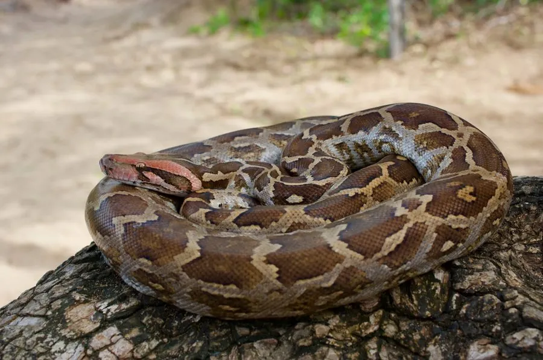

爬行动物 · 动物界
印度蟒 Python molurus

南亚大型无毒蟒蛇，体长 3–4 米，靠缠绕绞杀猎物，因皮革和宠物贸易而数量下降，受国际公约严格保护。
- 分类
- 门脊索动物门纲爬行纲目有鳞目科蟒科属蟒属
- 栖息环境
- 南亚的森林、灌丛、河岸湿地与农田边缘
- 地理分布
- 印度、巴基斯坦、斯里兰卡、尼泊尔等南亚国家
- 保护级别
- IUCN 近危（NT）；CITES 附录 I；非中国原产
物种志
印度蟒体长 3–4 米，个别可超过 5 米，雌性大于雄性。身体粗壮，头颈分界明显，吻端有热敏感的唇窝；体色以淡黄褐或灰白为底，背部有大型黑褐色斑块，斑块边缘镶浅色，尾部呈黑白相间的斑纹，腹部黄白色。它行动稳健，善于攀爬和游泳。
它分布于印度、巴基斯坦、斯里兰卡等南亚地区，栖息于森林、灌丛、河岸和农田附近，夜间活动，捕食鼠类、兔、鹿、鸟类等，靠缠绕使猎物窒息后整只吞下。每年 3–6 月繁殖，雌蟒产卵 20–50 枚，盘在卵上孵卵约 55–70 天。由于皮革贸易和宠物捕捉，野生印度蟒数量明显下降，被列为近危物种并列入国际公约附录 I，国际贸易受到严格限制。
形态与习性
- 食性鼠类、兔、鹿、鸟类，整只吞食
- 体长3–4 m，最长可超 5 m
- 体重约 30–50 kg
- 寿命约 20–25 年
- 繁殖卵生，20–50 枚，孵化 55–70 天
- 活动节律夜行性，善攀爬和游泳
趣味知识
- 印度蟒体色偏浅，尾部的黑白斑纹是它区别于其他蟒蛇的特征之一。
- 雌蟒孵卵时会盘在卵上，靠肌肉颤抖产热维持卵的温度。
- 印度蟒被列入国际公约附录 I，国际贸易受到严格限制。